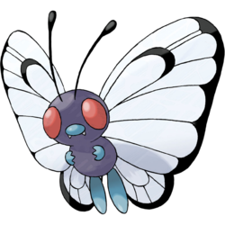
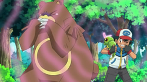

Es un pokemon tipo bicho introducido en la generación 1.

Número de pokedex
#10Tipo

Habilidades
Dentro de sus habilidades tenemos:Shield Dust
Run Away
Hidden Ability

Su tercera y última evolución al llegar a nivel 10 es Butterfree.
Caterpie es un Pokémon que se parece a una oruga verde. Hay marcas amarillas en forma de anillo en los lados de su cuerpo, que se asemejan a sus ojos y están destinadas a ahuyentar a los depredadores. Su característica más notable es la antena roja brillante en su cabeza, que libera un hedor para repeler a los depredadores.
